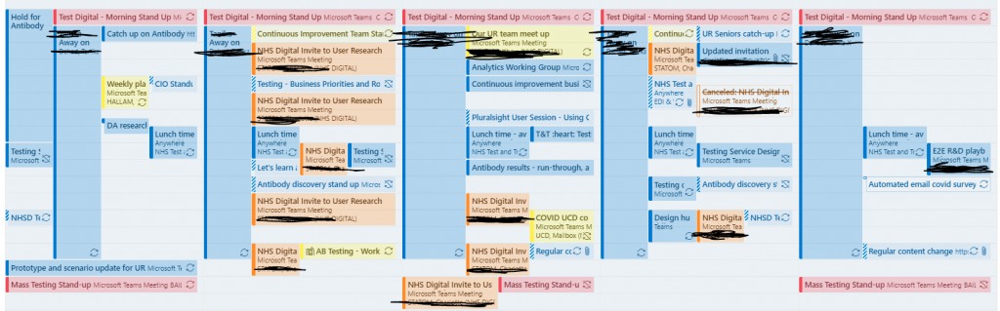

The last round of research I delivered was in January, since then our amazing team of User Researchers have been ploughing ahead delivering great projects and new insights every week. We’re on Sprint 22 (Round 165) currently!
Having just enough researchers enabled me to spend more time scoping requests, planning ahead and working on some continuous improvement themes that support our researchers to improve overall quality and work more effectively.
I like to regularly remind our team that I’m super keen to attend at least one research session each week! As a kinaesthetic learner I love hearing users’ stories first hand - it lasts much longer than hearing findings being played back at another Show and Tell (yes there are many UR playbacks each week!!)
This week was a really interesting week, and maybe I did speak to soon about getting immersed in some research… Due to resource changes in our team and several ‘urgent requests / policy updates / user journey changes’ I needed to jump straight back into a high-priority discovery project and deliver some actual research.
It was a crazy week-or-so but yesterday, the 2-week discovery concluded and the project team have enough user insight to feedback to their delivery board and (hopefully) to make the right decisions ahead of going into Alpha.
So what did we do ?

Wednesday (14th) - Thursday (15th)
- Discovery project kick off - understanding the business problem and objective. Defining what we need to learn about our users and their needs.
- Creating service design concepts (to do the right thing) - working really closely with service design / content / policy / clinical and operations
- Arrange recruitment for 12 participants with a variety of test experience and from different demographic groups.
- Usually we might only gather feedback from 5-6 users however as there were four contrasting concepts we thought we would need 8-10 users to get a robust overall preference
Friday (16th) - Monday (19th)
- Sketch user flows, heuristic review to question any assumptions
- Prepare content to support testing, check with clinical / policy / legal / ops. ** Early content testing is helpful for understanding awareness, perceived value and sentiment about concepts. It can also identify motivators/detractors that may can make the comms/onboarding for a new concept succeed or fail.
- Prepared research scripts, reviewed these with the team and stakeholders to understand if the objectives and questions would meet everyone’s needs
- Moved 5 research sessions booked for Monday back to later in week - the content wasn’t ready just yet.
Tuesday (20th)
- Interview users / test concepts (5 users) 1 hour session each with short break. ** Usually at least 1-2 would drop out so we overbook but un/fortunately everyone turned up - it was a REALLY long day!!
- Interim analysis required for digital Standup next day
Wednesday (21st)
- AM - regular team meetings; these are really important to keep in touch and plan ahead even when the research is still going on at full pace. It gives you a break to reflect on things with colleagues
- PM - continue interviews! (3 more users)
- Stakeholder engagement at various project meetings
Thursday (22nd)
- AM/PM - interview users / test concepts. 2 more users / 1 cancellation).
- It turned out that by user 8 we already had a clear favourite and second favourite concepts, however these final 2 users helped validate that insight with another demographic segment
- Lunch - went for a short walk and the first chance to reflect on the findings
- Stakeholder engagement at various project meetings
Friday (23rd)
- AM - Finalise analysis on Miro
- AM - Finalise presentation
- PM - 45 minute debrief for Discovery project team
- PM - Pay incentives, project admin wrap, distribute report
Monday (26th)
- AM - Planning for next Sprint
- PM - Show and Tell - Wider stakeholders
- Now usually I don’t work Fridays due to compressed working hours, but this project was quite intense so despite working long hours mid-week and with support from the team it wasn’t actually possible to get it all done in Mon-Thurs; this has left me rather cream-crackered this weekend!
Reflections on things I’ve learnt this year
It often is a hectic schedule in the design/research space on a national programme - policy changes frequently… and so the service design, interaction and content design change frequently too!
Understandably when delivering at pace, some decisions would be difficult to make without any end user insight - user research while important can also be viewed as ‘a blocker’ if everyone is sat around waiting around for ‘an answer’. We don’t like our team to be perceived as slowing things down a lot (of course research does take some time) because more key decisions are then made without any research. We know where that happens assumptions and bias are more likely to creep in.
Due to the concern of delaying progress on a key national service - I’ve spent a lot of time over the year trying to improve our research cadence and efficiency. Things like automated participant management (panels), standardising recruitment and interview scheduling approach, consistent analysis approaches, these have all sped things up. Another major benefit of consistent team and consistent approaches is when colleagues have to drop-in to support last minute there isn’t a ‘forming/storming/norming’ phase - everyone can just continues ‘performing’.
Another thing I’ve realised however is that, no matter how quick the research can be delivered, there is always another project (or 10!) waiting to be delivered as urgently. This usually becomes apparent just as the current one is wrapping up. To cope with constant pressure to deliver quality at pace we ask all our researchers to book time off regularly (including me), and to arrange ‘fire breaks’ every 4-5 weeks to ensure we have time to reflect, consolidate learnings and recover from working flat out!
TL;DR
There are many significant challenges while delivery at pace on national systems, this has been particularly noticeable on systems that are central to the response for managing the Coronavirus pandemic.
It has been a fantastic experience to even be involved such a national effort; and I hope our research has made a positive contribution to improving things for end-users!
I have huge respect for the amazing researchers across the many organisations I’ve collaborated with recently (NHS, Deloitte, Kainos, BJSS, Hippo Digital, and other contracting companies) they have all been giving it their everything and have delivered over 1,000 user interviews during the last year.
It feels like on Testing we’re all about ready for a long break - the barista at Costa tells me that on May 17th it’s all over! But who knows what this year will bring?